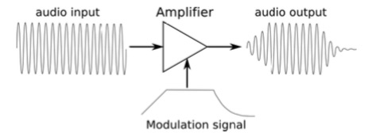

A tutorial for learning the basics of subtractive synthesizers
Voltage Controller Amplifier
The VCA or voltage controlled amplifier generally follows the filter. The VCA behaves in a similar way as the volume control, except that it controls the level based on Control Voltage signals. The gain of the VCA is controllable by the GATE or ENVELOPE. The amplifier is primarily responsible for shaping a sound’s dynamics.
